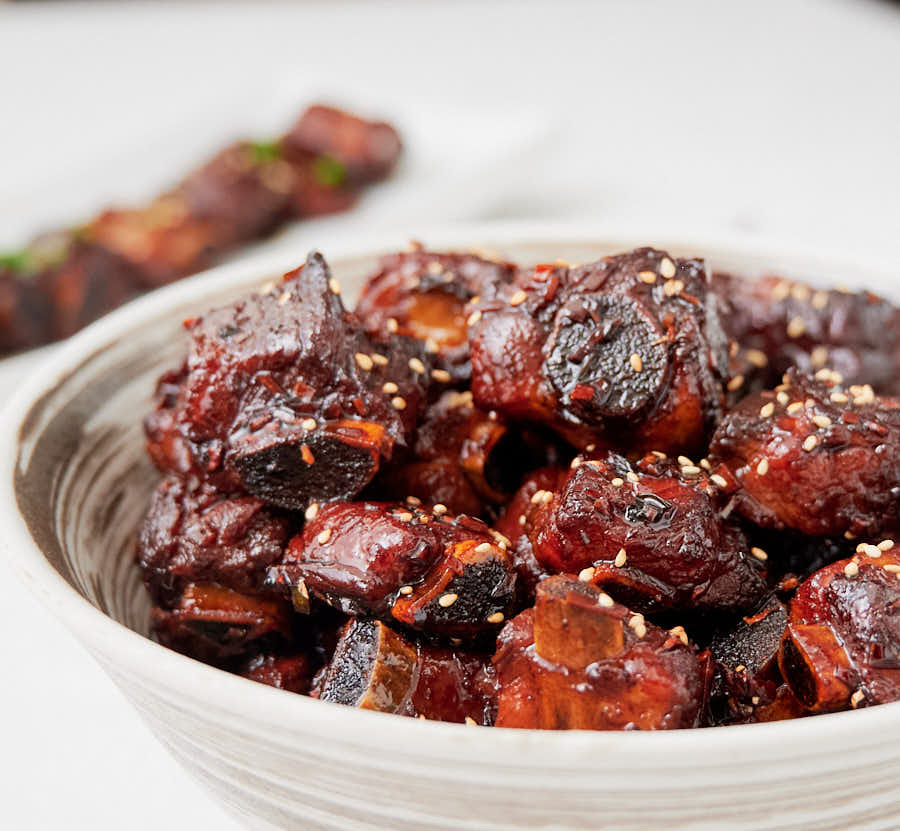

Home
Sweet and sour spare ribs

Description
Impossibly delicious and outrageously sticky sweet and sour pork ribs all the way from Shanghai.
Ingredients
Pre-cooked spareribs
- 1.5 lbs spare ribs cut into individual ribs and into one inch pieces.
- 3 tbsp all purpose soy
- 2 tbsp shaoxing wine
- 1 star anise
- enough water to cover
The sweet and sour ribs
- the pre-cooked ribs from above
- 2 tbsp neutral oil
- 2 Ounces rock sugar
- 1 tbsp minced ginger
- 2 tbsp minced garlic
- 1 tbsp minced fresh green chili
- 2 tbsp dark soy
- 1 tbsp black vinegar
- 1 tsp sesame oil
- 1/2 tsp MSG
- 1 tbsp shaoxing wine
Instructions
Braise the ribs
- Blanching meat when making stocks is a great trick I am borrowing from making Tonkotsu broth. Grab a pot large enough to hold the ribs, cover with water and bring to a boil over medium heat. Let them boil a couple of minutes.
- You should be looking at a big raft of gunk at this point. Strain the ribs, discarding the liquid and give them a good rinse under cold water. Why cold? Because the ribs are hot and you are going to have to handle them.
- Depending on how gunked up the ribs are you may have to rinse each rib individually. The pork broth you are going to make here is great for noodle soups. You will want to keep it.
- Combine the 3 tbsp all purpose soy sauce, 2 tbsp shaoxing wine, the star anise, water and the now blanched ribs in the same pot (rinsed of any gunk from the previous step). I prefer a pot over a wok here but that's just me. Do what you know.
- Bring to a simmer, cover and cook until the ribs are just tender. If you have an instant read thermometer 195-200F is your target. This should take between 1 and 2 hours. Depends on just how meaty your ribs are.
- Remove the ribs from the liquid. Strain the liquid and store in the fridge. When cooled, skim the fat from the surface. You now have some great stock for an Asian noodle soup.
- If you get into these ribs you can make big batches and freeze them. That way you can make these ribs any night of the week.
Make the ribs
- Do your prep. This is going to go fast. Chop your garlic, ginger and chilies. Combine the soy, black vinegar and sesame oil in a small bowl. Measure out your shaoxing wine.
- Preheat your wok. I'd say 12 inches is about the minimum diameter you want here.
- Add the oil and rock sugar. Stir until the sugar melts and you turns light caramel colour. This should take three or four minutes.
- Add the ribs and toss until they are well coated with the caramel. You'll be able to clearly see what is coated and what is not.
- Add the garlic, ginger and chilies. Cook, tossing the ingredients in the pan for about 30 seconds. You want to keep things moving here to make sure you don't burn the garlic.
- Turn the heat up. Add the soy/vinegar/sesame oil mixture. Pour it down the sides of the wok. It isn't easy getting wok hei at home. Everything helps. Add the MSG if using.
- Cook for about a minute. You want things to reduce a bit. Then add the shaoxing wine. Cook another minute or so.
- Serve garnished with sesame seeds if you like.